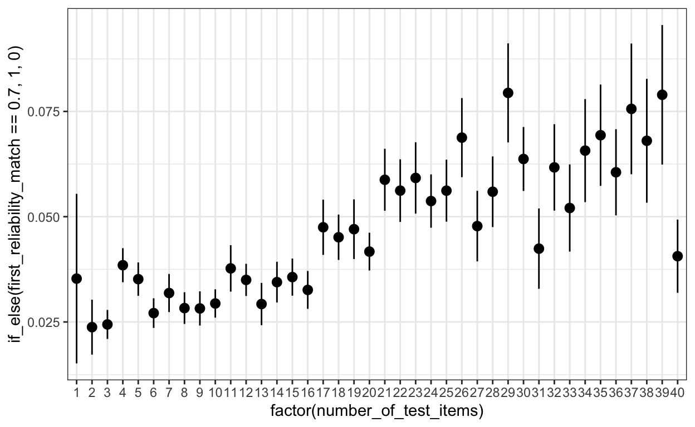

https://www.apa.org/pubs/databases/psyctests/field-guide
load(file = "../sober_rubric/raw_data/records_wide.rda")I wrote a little summary function to find columns which always consist only of a length 1 list with a single element. These can be losslessly translated to simple vectors.
col_structures <- records_wide %>%
ungroup() %>%
head(1000) %>% # looked only at 1000 to save time
rowwise() %>% # row wise is necessary to determine the length of the list in each row
mutate_all(~
if_else(length(.) == 1,
pluck_depth(.[[1]]),
pluck_depth(.))) %>%
ungroup() %>%
summarise_all(max) # take the maximum
# fetch all "simple" columns
col_structures %>% pivot_longer(everything()) %>%
filter(value == 1) %>% pull(name) %>%
cat(sep = "\n")DOI
Name
Purpose
Description
InstrumentType
Format
SupportingDocumentationLink
Commercial
Permissions
Fee
TestYear
TestItemsAvailable
Reliability
Validity
FactorAnalysis
NumberOfTestItems
TestReleaseDate
TestCorrectionDate
FactorsAndSubscalesTestTypeList
OtherVersionList
AcronymList
AuthorList
LanguagePresentList
LanguageAvailabilityList
SupportingDocumentationList
ConstructList
TestFileList
ClassificationList
MethodologyList
AdministrationMethodList
AgeGroupList
PopulationGroupList
OtherPopulationDetailsList
KeyWordList
IndexTermList
SourceCitationList
InstitutionalAuthorList
Correspondence
WebsiteList
AlternateNameList
TestLocationList
PublisherListSimplify all the simple list columns to character columns.
records_wide <- records_wide %>%
hoist(DOI, DOI = list(1, 1), .remove = FALSE) %>%
hoist(Name, Name = list(1, 1), .remove = FALSE) %>%
hoist(Purpose, Purpose = list(1, 1), .remove = FALSE) %>%
hoist(Description, Description = list(1, 1), .remove = FALSE) %>%
hoist(InstrumentType, InstrumentType = list(1, 1), .remove = FALSE) %>%
hoist(Format, Format = list(1, 1), .remove = FALSE) %>%
hoist(SupportingDocumentationLink, SupportingDocumentationLink = list(1, 1), .remove = FALSE) %>%
hoist(Commercial, Commercial = list(1, 1), .remove = FALSE) %>%
hoist(Permissions, Permissions = list(1, 1), .remove = FALSE) %>%
hoist(Fee, Fee = list(1, 1), .remove = FALSE) %>%
hoist(TestYear, TestYear = list(1, 1), .remove = FALSE) %>%
hoist(TestItemsAvailable, TestItemsAvailable = list(1, 1), .remove = FALSE) %>%
hoist(Reliability, Reliability = list(1, 1), .remove = FALSE) %>%
hoist(Validity, Validity = list(1, 1), .remove = FALSE) %>%
hoist(FactorAnalysis, FactorAnalysis = list(1, 1), .remove = FALSE) %>%
hoist(NumberOfTestItems, NumberOfTestItems = list(1, 1), .remove = FALSE) %>%
hoist(TestReleaseDate, TestReleaseDate = list(1, 1), .remove = FALSE) %>%
hoist(TestCorrectionDate, TestCorrectionDate = list(1, 1), .remove = FALSE) %>%
hoist(FactorsAndSubscales, FactorsAndSubscales = list(1, 1), .remove = FALSE)
records_wide$Reliability <- str_replace_all(records_wide$Reliability, "[[:space:]]+", " ")
records_wide$Validity <- str_replace_all(records_wide$Validity, "[[:space:]]+", " ")
records_wide$FactorAnalysis <- str_replace_all(records_wide$FactorAnalysis, "[[:space:]]+", " ")
records_wide$FactorsAndSubscales <- str_replace_all(records_wide$FactorsAndSubscales, "[[:space:]]+", " ")
instrument_types <- tibble(InstrumentType =
c("Inventory/Questionnaire", "Rating Scale", "Test", "Battery",
"Index/Indicator", "Survey", "Screener", "Task", "Checklist",
"Interview Schedule/Guide", "Diary", "Coding Scheme", "Projective Measure",
"Q Sort", "Vignette/Scenario"),
instrument_type_broad = c("questionnaire", "questionnaire", "test", "test",
"questionnaire", "questionnaire", "questionnaire", "task", "other-rating",
"other-rating", "questionnaire", "other-rating", "task",
"questionnaire", "questionnaire"))
records_wide <- records_wide %>% left_join(instrument_types, by = "InstrumentType")
records_wide <- records_wide %>%
rowwise() %>%
mutate(classifications_n = length(ClassificationList)) %>%
ungroup() %>%
hoist(ClassificationList, classification_1 = list(1,1,1), .remove = FALSE) %>%
hoist(ClassificationList, classification_2 = list(2,1,1), .remove = FALSE) %>%
mutate(classification_1 = str_replace_all(classification_1, "[:space:]+", " "),
classification_2 = str_replace_all(classification_2, "[:space:]+", " "))
records_wide <- records_wide %>%
mutate(TestYear = as.numeric(TestYear))Set binary fields for commercial and open.
records_wide <- records_wide %>%
mutate(commercial_bin = case_when(
Commercial == "Yes" ~ 1L,
Commercial == "No" ~ 0L,
Commercial == "Unknown" ~ NA_integer_
),
open_bin = case_when(
Permissions == "May use for Research/Teaching" ~ 1L,
Permissions == "Not Specified" ~ NA_integer_,
TRUE ~ 0L
))
Coping Behavior Life Satisfaction
70 71
Creativity Religiosity
72 77
Body Image Resilience
78 78
Attitudes Coping Strategies
80 81
Empathy Intelligence
81 81
Acculturation Personality Traits
83 86
Consumer Attitudes Job Satisfaction
88 96
Health-Related Quality of Life Quality of Life
107 108
Social Support Personality
123 140
Anxiety Depression
143 156 [1] 19909[1] 19839[1] 20137records_wide$acronym_base <- acronym_baseExtract the source citation DOI. I didnt actually run this yet, want to do it with scopus where I can get citations by year.
# records_wide <- records_wide %>%
# hoist(SourceCitationList, first_source_doi = list(1, "DOI", 1), .remove = FALSE)
#
# source_dois <- records_wide %>% select(first_source_doi) %>% drop_na() %>% distinct()
#
# # commented out for now
# # source_dois <- rcrossref::cr_citation_count(source_dois$first_source_doi)
# # records_wide <- records_wide %>% left_join(source_dois %>% rename(first_source_doi = doi, citation_count_crossref = count), by = "first_source_doi")
#
#
# library(rscopus)
# scopus_api_key <- "7804cba4fc15e860f8c5f549ac2215eb"
# find_cit_scopus <- function(x){
#
# }
# for (i in seq_along(nrow(source_dois))) {
# find_cit_scopus(source_dois$first_source_doi[i])
# if(i %% 10 == 0) print(i, source_dois$first_source_doi[i])
# }
# existing <- readr::read_tsv("../sober_rubric/raw_data/scopus_citation_counts.tsv")
# for (i in seq_along(setdiff(source_dois$first_source_doi, existing$doi))) {
# x <- source_dois$first_source_doi[i]
# if(! x %in% existing$doi) {
# s <- generic_elsevier_api(api_key = scopus_api_key,
# doi = x,
# date = "1980-2023",
# type = "citations",
# search_type = "scopus")
# citations <- s$content$`abstract-citations-response`$citeColumnTotalXML$citeCountHeader$columnTotal %>% as.data.frame()
# if(length(citations)) {
# colnames(citations) <- s$content$`abstract-citations-response`$citeColumnTotalXML$citeCountHeader$columnHeading %>% as.data.frame()
# citations <- pivot_longer(citations, everything(), names_to = "year", values_to = "citation_count", values_transform = as.numeric, names_transform = as.numeric)
# citations$doi <- x
# } else {
# citations <- tibble(doi = x)
# }
# existing <- bind_rows(existing, citations)
# readr::write_tsv(existing, "../sober_rubric/raw_data/scopus_citation_counts.tsv")
# }
# if(i %% 10 == 0) { cat(paste(i, source_dois$first_source_doi[i])) }
# }
#
#
# records_wide <- records_wide %>% distinct() %>% left_join(existing %>% group_by(doi) %>% summarise(citation_count = sum(citation_count, na.rm = T)), by = c("first_source_doi" = "doi"))records_wide <- records_wide %>%
mutate(
no_reliability = Reliability == "No reliability indicated.",
first_reliability_match = as.numeric(str_match(Reliability, "(\\.\\d+)")[,2]),
all_reliabilities = lapply(str_extract_all(Reliability, "(\\.\\d+)"), as.numeric)
)
This is a unidimensional measure. No factor analysis indicated.
19 45868 records_wide %>% group_by(InstrumentType) %>%
summarise(Reliability = mean(Reliability!="No reliability indicated."),
FactorAnalysis = mean(FactorAnalysis!="No factor analysis indicated." & FactorAnalysis != "This is a unidimensional measure."),
Validity = mean(Validity!="No validity indicated.")) %>%
arrange(Reliability+FactorAnalysis+Validity) %>%
mutate(across(c(Reliability, FactorAnalysis, Validity), ~ round(100 * .)))# A tibble: 16 4
InstrumentType Reliability FactorAnalysis Validity
<chr> <dbl> <dbl> <dbl>
1 Interview Schedule/Guide 34 6 22
2 Task 44 6 31
3 Diary 45 14 27
4 <NA> 53 5 41
5 Test 64 4 31
6 Q Sort 39 29 34
7 Survey 50 23 31
8 Vignette/Scenario 63 22 28
9 Checklist 59 14 42
10 Projective Measure 61 16 45
11 Index/Indicator 75 21 35
12 Coding Scheme 87 9 36
13 Battery 58 24 59
14 Rating Scale 86 27 46
15 Screener 70 34 78
16 Inventory/Questionnaire 82 56 60# records_wide %>% group_by(classification_1) %>%
# summarise(Reliability = mean(Reliability!="No reliability indicated."),
# FactorAnalysis = mean(FactorAnalysis!="No factor analysis indicated." & FactorAnalysis != "This is a unidimensional measure."),
# Validity = mean(Validity!="No validity indicated.")) %>% arrange(Reliability+FactorAnalysis+Validity) %>% Viewsamplesizes <- records_wide$Reliability %>% str_match_all(regex("\\bn ?= ?(\\d+)", ignore_case = TRUE)) %>% map(~ as.numeric(.[,2]))
# samplesizes %>% unlist() %>% table() %>% sort()
samplesizes %>% unlist() %>% median()[1] 82[1] 1048# records_wide$Reliability[- (samplesizes %>% map_dbl(~ .[1]) %>% is.na() %>% which())]
samplesizes <- records_wide$Validity %>% str_match_all(regex("\\bn ?= ?(\\d+)", ignore_case = TRUE)) %>% map(~ as.numeric(.[,2]))
# samplesizes %>% unlist() %>% table()
samplesizes %>% unlist() %>% median()[1] 117# records_wide$Validity[- (samplesizes %>% map_dbl(~ .[1]) %>% is.na() %>% which())]
samplesizes <- records_wide$FactorAnalysis %>% str_match_all(regex("\\bn ?= ?(\\d+)", ignore_case = TRUE)) %>% map(~ as.numeric(.[,2]))
# samplesizes %>% unlist() %>% table()
samplesizes %>% unlist() %>% median()[1] 303# records_wide$FactorAnalysis[- (samplesizes %>% map_dbl(~ .[1]) %>% is.na() %>% which())]records_wide$number_of_factors <- str_match_all(records_wide$FactorAnalysis, regex("(\\d+)(-| )factor", ignore_case = TRUE)) %>% map(~ as.numeric(.[,2]))
records_wide$number_of_factors_subscales <- str_match_all(records_wide$FactorsAndSubscales, ";") %>% map_dbl(~ length(.)) + 1
records_wide$number_of_factors_subscales[is.na(records_wide$FactorsAndSubscales)] <- NA_real_
# records_wide$FactorsAndSubscales %>% na.omit()
unlist(records_wide$number_of_factors) %>% table() %>% sort().
29 32 35 38 41 45 70 83 120 22 24 28 40 33
1 1 1 1 1 1 1 1 1 2 2 2 2 3
20 21 19 17 16 18 15 13 14 12 11 9 10 8
4 5 8 9 10 16 23 29 39 59 100 114 125 234
7 1 6 5 4 2 3
330 368 542 875 1195 1331 1727 .
22 25 29 38 23 28 30 34 35 36 27 33 21 26
1 1 1 1 2 2 2 2 2 2 3 3 4 4
24 20 19 17 18 15 16 14 13 12 11 10 9 1
5 6 9 11 15 24 25 44 61 78 102 185 219 224
8 7 6 5 4 2 3
390 570 943 1297 1820 1849 2127 ggplot(records_wide, aes(number_of_factors_subscales)) + geom_bar(aes(y= ..count..), stat = 'count') + scale_x_continuous(breaks = 1:20)cor(records_wide$number_of_factors_subscales, records_wide$number_of_factors %>% map_dbl(~ .[1]), use = 'p')[1] 0.6284253records_wide$NumberOfTestItems <- str_replace_all(records_wide$NumberOfTestItems, "[[:space:]]+", " ")
item_numbers <- records_wide$NumberOfTestItems %>% str_match_all(regex("(\\d+)( |-)(total |primary |main |final )?(item|question)s?( ?-?measure)?", ignore_case = TRUE)) %>% map(~ as.numeric(.[,2]))
# table(unlist(item_numbers))
consists_of_numbers <- records_wide$NumberOfTestItems %>% str_match_all(regex("(comprises|consists of|contains|composed of|comprised of|) (\\d+)", ignore_case = TRUE)) %>% map(~ as.numeric(.[,3]))
just_numbers <- str_match(records_wide$NumberOfTestItems,pattern = "^(\\d+) ?$")[,2] %>% as.numeric()
median(unlist(item_numbers))[1] NAnumbers <- records_wide$NumberOfTestItems %>% str_match_all("(\\d+)( |-)?") %>% map(~ as.numeric(.[,2]))
words <- case_when(
str_detect(records_wide$NumberOfTestItems, regex("single(-| )(item|question)", ignore_case = TRUE)) ~ 1,
str_detect(records_wide$NumberOfTestItems, regex("one(-| )(item|question)", ignore_case = TRUE)) ~ 1,
str_detect(records_wide$NumberOfTestItems, regex("two(-| )(item|question)", ignore_case = TRUE)) ~ 2,
str_detect(records_wide$NumberOfTestItems, regex("three(-| )(item|question)", ignore_case = TRUE)) ~ 3,
str_detect(records_wide$NumberOfTestItems, regex("four(-| )(item|question)", ignore_case = TRUE)) ~ 4,
str_detect(records_wide$NumberOfTestItems, regex("five(-| )(item|question)", ignore_case = TRUE)) ~ 5,
str_detect(records_wide$NumberOfTestItems, regex("six(-| )(item|question)", ignore_case = TRUE)) ~ 6,
str_detect(records_wide$NumberOfTestItems, regex("seven(-| )(item|question)", ignore_case = TRUE)) ~ 7,
str_detect(records_wide$NumberOfTestItems, regex("eight(-| )(item|question)", ignore_case = TRUE)) ~ 8,
str_detect(records_wide$NumberOfTestItems, regex("nine(-| )(item|question)", ignore_case = TRUE)) ~ 9,
str_detect(records_wide$NumberOfTestItems, regex("ten(-| )(item|question)", ignore_case = TRUE)) ~ 10,
str_detect(records_wide$NumberOfTestItems, regex("eleven(-| )(item|question)", ignore_case = TRUE)) ~ 11,
str_detect(records_wide$NumberOfTestItems, regex("twelve(-| )(item|question)", ignore_case = TRUE)) ~ 12,
str_detect(records_wide$NumberOfTestItems, regex("thirteen(-| )(item|question)", ignore_case = TRUE)) ~ 13,
str_detect(records_wide$NumberOfTestItems, regex("fourteen(-| )(item|question)", ignore_case = TRUE)) ~ 14,
str_detect(records_wide$NumberOfTestItems, regex("fifteen(-| )(item|question)", ignore_case = TRUE)) ~ 15,
str_detect(records_wide$NumberOfTestItems, regex("sixteen(-| )(item|question)", ignore_case = TRUE)) ~ 16,
str_detect(records_wide$NumberOfTestItems, regex("seventeen(-| )(item|question)", ignore_case = TRUE)) ~ 17,
str_detect(records_wide$NumberOfTestItems, regex("eighteen(-| )(item|question)", ignore_case = TRUE)) ~ 18,
str_detect(records_wide$NumberOfTestItems, regex("nineteen(-| )(item|question)", ignore_case = TRUE)) ~ 19,
str_detect(records_wide$NumberOfTestItems, regex("twenty(-| )(item|question)", ignore_case = TRUE)) ~ 20,
str_detect(records_wide$NumberOfTestItems, regex("forty(-| )(item|question)", ignore_case = TRUE)) ~ 40,
str_detect(records_wide$NumberOfTestItems, regex("sex items", ignore_case = TRUE)) ~ 6,
TRUE ~ NA_real_)
words_without_item <- case_when(
str_detect(records_wide$NumberOfTestItems, regex("single", ignore_case = TRUE)) ~ 1,
str_detect(records_wide$NumberOfTestItems, regex("one", ignore_case = TRUE)) ~ 1,
str_detect(records_wide$NumberOfTestItems, regex("two", ignore_case = TRUE)) ~ 2,
str_detect(records_wide$NumberOfTestItems, regex("three", ignore_case = TRUE)) ~ 3,
str_detect(records_wide$NumberOfTestItems, regex("four", ignore_case = TRUE)) ~ 4,
str_detect(records_wide$NumberOfTestItems, regex("five", ignore_case = TRUE)) ~ 5,
str_detect(records_wide$NumberOfTestItems, regex("six", ignore_case = TRUE)) ~ 6,
str_detect(records_wide$NumberOfTestItems, regex("seven", ignore_case = TRUE)) ~ 7,
str_detect(records_wide$NumberOfTestItems, regex("eight", ignore_case = TRUE)) ~ 8,
str_detect(records_wide$NumberOfTestItems, regex("nine", ignore_case = TRUE)) ~ 9,
str_detect(records_wide$NumberOfTestItems, regex("ten", ignore_case = TRUE)) ~ 10,
str_detect(records_wide$NumberOfTestItems, regex("eleven", ignore_case = TRUE)) ~ 11,
str_detect(records_wide$NumberOfTestItems, regex("twelve", ignore_case = TRUE)) ~ 12,
str_detect(records_wide$NumberOfTestItems, regex("thirteen", ignore_case = TRUE)) ~ 13,
str_detect(records_wide$NumberOfTestItems, regex("fourteen", ignore_case = TRUE)) ~ 14,
str_detect(records_wide$NumberOfTestItems, regex("fifteen", ignore_case = TRUE)) ~ 15,
str_detect(records_wide$NumberOfTestItems, regex("sixteen", ignore_case = TRUE)) ~ 16,
str_detect(records_wide$NumberOfTestItems, regex("seventeen", ignore_case = TRUE)) ~ 17,
str_detect(records_wide$NumberOfTestItems, regex("eighteen", ignore_case = TRUE)) ~ 18,
str_detect(records_wide$NumberOfTestItems, regex("nineteen", ignore_case = TRUE)) ~ 19,
str_detect(records_wide$NumberOfTestItems, regex("twenty", ignore_case = TRUE)) ~ 20,
str_detect(records_wide$NumberOfTestItems, regex("thirty", ignore_case = TRUE)) ~ 30,
str_detect(records_wide$NumberOfTestItems, regex("forty", ignore_case = TRUE)) ~ 40,
str_detect(records_wide$NumberOfTestItems, regex("fifty", ignore_case = TRUE)) ~ 50,
TRUE ~ NA_real_)
# table(words)
# table(words_without_item[which(words_without_item!=words)])
# records_wide$NumberOfTestItems[!is.na(words)]
# records_wide$NumberOfTestItems[which(item_numbers %>% map(~ .[1]) == 1192)]
# records_wide$NumberOfTestItems[which(item_numbers %>% map(~ length(.)) > 1)]
# table(records_wide$NumberOfTestItems) %>% sort() %>% tail(20)
# records_wide$NumberOfTestItems[which(!is.na(numbers %>% map(~ .[1])) &
# is.na(item_numbers %>% map(~ .[1])) &
# is.na(consists_of_numbers %>% map(~ .[1])) &
# is.na(just_numbers %>% map(~ .[1])) &
# is.na(words)
# )]
# records_wide$NumberOfTestItems[which(!is.na(records_wide$NumberOfTestItems) & is.na(numbers %>% map(~ .[1])) & is.na(item_numbers %>% map(~ .[1])) & is.na(words))]
unlist(numbers) %>% table() %>% qplot() +scale_x_sqrt(limits = c(1,30))good_guess <- coalesce(just_numbers,
item_numbers %>% map_dbl(~ .[1]),
words)
best_guess <- coalesce(just_numbers,
item_numbers %>% map_dbl(~ .[1]),
words,
consists_of_numbers %>% map_dbl(~ .[1]),
words_without_item,
numbers %>% map_dbl(~ .[1]))
xtabs(~ is.na(best_guess) + is.na(records_wide$NumberOfTestItems)) is.na(records_wide$NumberOfTestItems)
is.na(best_guess) FALSE TRUE
FALSE 67861 0
TRUE 144 3687 is.na(records_wide$NumberOfTestItems)
is.na(good_guess) FALSE TRUE
FALSE 64079 0
TRUE 3926 3687records_wide$number_of_test_items <- good_guess
records_wide$number_of_test_items_best_guess <- best_guess
records_wide$number_of_test_items_potential_subscales <- coalesce(item_numbers %>% map_dbl(~ length(.)), consists_of_numbers %>% map_dbl(~ length(.)), numbers %>% map_dbl(~ length(.)), 1)
# records_wide$NumberOfTestItems[which(!is.na(records_wide$NumberOfTestItems) & is.na(best_guess))]
qplot(records_wide$number_of_test_items,binwidth = 1) + xlim(0,200) + theme_bw()# table(records_wide$number_of_test_items) %>% sort()
cor(records_wide$first_reliability_match, records_wide$number_of_test_items, use = 'p')[1] -0.05919112
records_wide$NameOC <- records_wide$Name
records_wide$Name <- records_wide$NameOC
records_wide$Name <- str_to_lower(records_wide$Name)
records_wide <- records_wide %>% mutate(
# psycinfo doesn't differentiate dashes
# Name = Name_orig,
# Name_orig = Name,
name_psycinfo = str_replace_all(Name, "(||||||-|||-||)", "-"),
name_psycinfo = str_replace_all(name_psycinfo, "()", "'"),
name_psycinfo = str_replace_all(name_psycinfo, "(\")", "'"),
name_psycinfo = str_replace_all(name_psycinfo, "(|)", "'"),
name_psycinfo = str_replace_all(name_psycinfo, "( +)", " "),
name_psycinfo = str_replace_all(name_psycinfo, "( )", " "),
name_psycinfo = str_replace_all(name_psycinfo, "(\n)", " "),
name_psycinfo = str_replace_all(name_psycinfo, "", "c"),
name_psycinfo = str_replace_all(name_psycinfo, "", "(TM)"),
name_psycinfo = str_replace_all(name_psycinfo, "", "(C)"),
name_psycinfo = str_replace_all(name_psycinfo, "", "(R)"),
name_psycinfo = coalesce(stringi::stri_trans_general(name_psycinfo, "latin-ascii"), name_psycinfo),
name_psycinfo = str_replace_all(name_psycinfo, "\\(TM\\)", ""),
name_psycinfo = str_replace_all(name_psycinfo, "\\(C\\)", ""),
name_psycinfo = str_replace_all(name_psycinfo, "\\(R\\)", ""),
# name_psycinfo = coalesce(iconv(name_psycinfo, to='ASCII//TRANSLIT//IGNORE'), name_psycinfo),
name_psycinfo = str_replace_all(name_psycinfo, "[:space:]+", " ")
)
psycinfo_chars <- c(" ", "-", ",", ";", ":", "!", "?", ".", "'", "(", ")", "[",
"]", "/", "&", "", "", "+", "<", ">", "", "0", "1", "2",
"3", "4", "5", "6", "7", "8", "9", "a", "b", "c", "d", "e", "f",
"g", "h", "i", "j", "k", "l", "m", "n", "o", "p", "q", "r", "s",
"t", "", "u", "v", "w", "x", "y", "z")
psycinfo_chars_escaped <- c(" ", "\\-", ",", ";", ":", "!", "?", ".", "'", "(", ")", "\\[",
"\\]", "/", "&", "", "", "+", "<", ">", "", "0", "1", "2",
"3", "4", "5", "6", "7", "8", "9", "a", "b", "c", "d", "e", "f",
"g", "h", "i", "j", "k", "l", "m", "n", "o", "p", "q", "r", "s",
"t", "", "u", "v", "w", "x", "y", "z")
records_wide %>% select(DOI, NameOC, Name, name_psycinfo) %>%
saveRDS("../sober_rubric/raw_data/psycinfo_psyctests_names.rds")
records_wide %>% group_by(name_psycinfo) %>%
filter(n_distinct(Name) > 1) %>%
arrange(name_psycinfo) %>%
select(name_psycinfo, Name) %>%
nrow()[1] 43# records_wide %>% filter(Name != name_psycinfo, str_detect(name_psycinfo, regex(paste0("^[", paste0(psycinfo_chars_escaped, collapse = ""),"]+$"), ignore_case = T), negate = T)) %>% select(DOI, Name, name_psycinfo) %>%
# mutate(notascii = str_extract_all(name_psycinfo, regex(paste0("^[", paste0(psycinfo_chars_escaped, collapse = ""),"]+$"), ignore_case = T))) %>%
# View
#merged_ebsco %>% group_by(DOI) %>% filter(n()>1) %>% ungroup() %>% select(DOI) %>% distinct() %>%
# inner_join(
# records_wide %>% filter(name_psycinfo != Name) %>% select(DOI, NameOC, name_psycinfo, Name)) %>% View.
\u0081 \u008f [ ] =
2 2 2 2 2 2 2 2 2 2
2 2 2 2 2 2 2 2 2 2
_ % <
2 2 2 2 4 4 4 4 4 4
>
4 4 4 4 4 4 4 4 4 4
@
4 4 4 4 4 6 6 6 6 6
6 6 6 6 6 8 8 8 8 10
# !
10 10 10 12 12 12 12 12 14 14
+
14 16 16 20 20 20 22 24 24 26
?
28 28 28 28 30 30 44 50 56 56
&
60 72 82 88 100 106 150 154 156 158
" . ( ) : /
170 270 318 424 478 478 706 1268 1374 1920
; ' , \n -
2014 2064 3592 4288 13604 79144 records_wide <- records_wide %>% mutate(
# psycinfo doesn't differentiate dashes
# Name = Name_orig,
# Name_orig = Name,
Name = str_replace_all(Name, "(||||||-|||-||)", "-"),
Name = str_replace_all(Name, "()", "'"),
Name = str_replace_all(Name, "(\")", "'"),
Name = str_replace_all(Name, "(|)", "'"),
Name = str_replace_all(Name, "( +)", " "),
Name = str_replace_all(Name, "", "c"),
Name = str_replace_all(Name, "( )", " "),
Name = str_replace_all(Name, "(\n)", " "),
Name = str_replace_all(Name, "(||)", ""),
Name = coalesce(stringi::stri_trans_general(Name, "latin-ascii"), Name),
Name = str_replace_all(Name, "[:space:]+", " ")
)
library(tidylog)
crosswalk <- uk2us::ukus_crosswalk
crosswalk <- setNames(crosswalk$us, crosswalk$uk)
str_replace_all("a labour baulk", crosswalk)[1] "a labor balk"records_wide <- records_wide %>% mutate(
Name = str_replace_all(Name, crosswalk)
)
num_spelled <- tibble(
num = as.character(0:100),
spelled = c("zero", "one", "two", "three", "four", "five", "six", "seven",
"eight", "nine", "ten", "eleven", "twelve", "thirteen",
"fourteen", "fifteen", "sixteen", "seventeen", "eighteen",
"nineteen", "twenty", "twenty one", "twenty two", "twenty three",
"twenty four", "twenty five", "twenty six", "twenty seven",
"twenty eight", "twenty nine", "thirty", "thirty one", "thirty two",
"thirty three", "thirty four", "thirty five", "thirty six",
"thirty seven", "thirty eight", "thirty nine", "forty", "forty one",
"forty two", "forty three", "forty four", "forty five", "forty six",
"forty seven", "forty eight", "forty nine", "fifty", "fifty one",
"fifty two", "fifty three", "fifty four", "fifty five", "fifty six",
"fifty seven", "fifty eight", "fifty nine", "sixty", "sixty one",
"sixty two", "sixty three", "sixty four", "sixty five", "sixty six",
"sixty seven", "sixty eight", "sixty nine", "seventy", "seventy one",
"seventy two", "seventy three", "seventy four", "seventy five",
"seventy six", "seventy seven", "seventy eight", "seventy nine",
"eighty", "eighty one", "eighty two", "eighty three", "eighty four",
"eighty five", "eighty six", "eighty seven", "eighty eight", "eighty nine",
"ninety", "ninety one", "ninety two", "ninety three", "ninety four",
"ninety five", "ninety six", "ninety seven", "ninety eight", "ninety nine", "one hundred")
)
roman_num_spelled <- tibble(num = c("\\bii\\b", "\\biii\\b", " \\biv\\b", "\\bv\\b"),
spelled = c("two", "three", "four", "five"))
num_spelled <- bind_rows(num_spelled, roman_num_spelled)%>% arrange(desc(num))
replace_nums <- num_spelled$spelled
names(replace_nums) <- num_spelled$num
records_wide <- records_wide %>% mutate(
# shouldn't treat 12 as being close to 1
Name_comparable = str_replace_all(Name, "(-|,)", " "),
Name_comparable = str_replace_all(Name_comparable, replace_nums),
)get_original <- function(your_list) {
if(is_empty(your_list)) {
NA_character_
} else {
versions <- tibble(OtherVersion = your_list)
versions <- versions %>%
unnest_wider(OtherVersion) %>%
mutate(
OtherVersionTestName = map_chr(OtherVersionTestName, ~.x[[1]]),
OtherVersionType = map_chr(OtherVersionTypeList, ~.x$OtherVersionType[[1]])
) %>%
select(OtherVersionTestName, OtherVersionType)
versions <- versions %>%
filter(OtherVersionType == "Original")
if(nrow(versions) == 0) {
NA_character_
} else {
versions %>% pull(OtherVersionTestName)
}
}
}
# debug(get_original)
records_wide <- records_wide %>%
hoist(OtherVersionList, original_name = list(), .transform =
get_original)
get_original_doi <- function(your_list) {
if(is_empty(your_list)) {
NA_character_
} else {
versions <- tibble(OtherVersion = your_list) %>%
rowwise() %>%
mutate(OtherVersionID = attr(OtherVersion, "OtherVersionTestID")) %>%
ungroup() %>%
unnest_wider(OtherVersion) %>%
mutate(
OtherVersionTestName = map_chr(OtherVersionTestName, ~.x[[1]]),
OtherVersionType = map_chr(OtherVersionTypeList, ~.x$OtherVersionType[[1]])
) %>%
select(OtherVersionID, OtherVersionTestName, OtherVersionType) %>%
mutate(OtherVersionDOI = str_replace(OtherVersionID, "9999-", "10.1037/t"))
versions <- versions %>%
filter(OtherVersionType == "Original")
if(nrow(versions) == 0) {
NA_character_
} else {
versions %>% pull(OtherVersionDOI)
}
}
}
# debug(get_original)
records_wide <- records_wide %>%
hoist(OtherVersionList, original_DOI = list(), .transform =
get_original_doi)
records_wide <- records_wide %>%
mutate(original_DOI = as.character(original_DOI)) %>%
# hoist(original_DOI, original_DOI = list(1)) %>%
mutate(original_test_DOI = coalesce(original_DOI, DOI))
records_wide <- records_wide %>%
hoist(TestTypeList, test_type = list(1,1,1), .remove = FALSE)
xtabs(~ is.na(original_DOI) + test_type, records_wide) test_type
is.na(original_DOI) Original Revision Subtest Translation
FALSE 0 4453 19 5187
TRUE 43478 5028 13 2735n_distinct(records_wide$original_test_DOI)[1] 62037records_wide$Name_base <- get_name_base(records_wide$Name)
# reduction
n_distinct(records_wide$Name) - n_distinct(records_wide$Name_base)[1] 9069records_wide %>% filter(Name != Name_base) %>% nrow()[1] 16670# A tibble: 5 3
test_type mismatch match
<chr> <dbl> <dbl>
1 Original 0.0570 0.943
2 Revision 0.549 0.451
3 Subtest 0.625 0.375
4 Translation 0.966 0.0336
5 <NA> 0.121 0.879 # records_wide %>% filter(test_type != "Original", is.na(original_DOI)) %>% select(DOI, Name_base, Name) %>%
# left_join(records_wide %>% filter(test_type == "Original") %>% select(Name_base = Name, original_DOI_by_name = DOI), by = "Name_base") %>% View
matches_by_doi <- records_wide %>%
select(original_DOI, Name, Name_base) %>%
inner_join(records_wide %>%
select(original_DOI = DOI, original_name = Name, original_Name_base = Name_base))
nrow(matches_by_doi)[1] 9656# matches_by_doi %>% filter(original_name == Name_base)
# matches_by_doi %>% filter(original_name != Name_base) %>% View()
# matches_by_doi %>% filter(original_name != Name_base) %>% filter(str_detect(Name_base, " for "), str_match(Name_base, "^(.+) for .+$")[,2] == original_name) %>% pull(Name_base) %>% str_extract(" for .+$") %>% table() %>% sort() %>% names() %>% dput()
unmatched_by_name <- records_wide %>% filter(is.na(original_DOI), test_type != "Original" | Name != Name_base) %>% select(test_type, DOI, Name = Name_base, NameOC_1 = NameOC) %>% anti_join(records_wide %>% filter(test_type == "Original") %>% select(Name))
nrow(unmatched_by_name)[1] 10021matches_by_name <- records_wide %>%
filter(test_type != "Original" | Name != Name_base) %>%
select(test_type, DOI, Name = Name_base, NameOC_1 = NameOC, original_DOI) %>%
inner_join(records_wide %>% filter(test_type == "Original") %>%
select(original_DOI_by_name = DOI, Name, NameOC) %>% group_by(Name) %>% mutate(same_name_n = n()) %>% ungroup(), by = "Name") %>%
left_join(records_wide %>% filter(test_type == "Original") %>%
select(original_DOI = DOI, Name, NameOC_by_doi = NameOC), by = "original_DOI")
matches_by_name %>% group_by(original_DOI == original_DOI_by_name) %>% summarise(n())# A tibble: 3 2
`original_DOI == original_DOI_by_name` `n()`
<lgl> <int>
1 FALSE 591
2 TRUE 5049
3 NA 1996# mismatches are mostly brE/amE equivalents and confusions between scale/measure/instrument and plural/singular
# matches_by_name %>% filter(original_DOI != original_DOI_by_name, NameOC != NameOC_by_doi) %>%
# select(NameOC_1, NameOC, NameOC_by_doi, same_name_n) %>%
# View()
sum(!is.na(records_wide$original_DOI))[1] 9659records_wide <- records_wide %>%
left_join(records_wide %>% filter(test_type == "Original") %>%
select(original_DOI_by_name = DOI, Name) %>% group_by(Name) %>% filter(n() == 1) %>% ungroup(), by = c("Name_base" = "Name")) %>%
mutate(original_DOI_combined = coalesce(original_DOI,
if_else(test_type != "Original" &
Name != Name_base, original_DOI_by_name, NA_character_)))
sum(!is.na(records_wide$original_DOI_combined)) - sum(!is.na(records_wide$original_DOI))[1] 907index_terms
Emotional States
798
Eating Behavior
803
Online Social Networks
804
Caregivers
809
Psychosexual Behavior
823
Quality of Life
841
Adult Attitudes
855
Cognitive Assessment
856
Emotions
857
Health Behavior
859
Social Interaction
860
Task
866
Employee Characteristics
867
Expectations
887
Chinese Cultural Groups
890
Adolescent Development
892
Well Being
903
Professional Competence
909
Behavioral Intention
931
Family Relations
935
Mental Health and Illness Assessment
942
Emotional Assessment
951
Nurses
969
Teacher Attitudes
972
Health Knowledge
975
Emotional Responses
983
Knowledge Level
988
Social Perception
1000
Health Attitudes
1011
Self-Concept
1017
Childhood Development
1044
Criterion Validity
1057
Inventories
1073
Interpersonal Interaction
1077
Working Conditions
1087
Professional Measures
1128
Consumer Surveys
1130
Decision Making
1148
Personality Traits
1157
Symptoms
1172
Likert Scales
1183
Student Characteristics
1187
Parent Child Relations
1192
Parental Attitudes
1226
Consumer Behavior
1227
Major Depression
1238
Interviews
1242
Organizational Behavior
1243
Coping Behavior
1246
Predictive Validity
1256
Motivation
1288
Treatment Process and Outcome Measures
1311
Screening Tests
1345
Anxiety
1408
Health Personnel Attitudes
1422
Surveys
1436
Interpersonal Relationships
1458
Therapeutic Processes
1480
College Students
1524
Family and Parenting Measures
1530
Stress and Coping Measures
1562
Adolescent Attitudes
1578
Developmental Measures
1604
Psychological Assessment
1650
Social Support
1663
Client Attitudes
1710
Consumer Attitudes
1769
Interrater Reliability
1839
Concurrent Validity
1906
Self-Efficacy
1917
Physical Health Assessment
1971
Face Validity
2023
Employee Attitudes
2050
Test Revision
2335
Content Validity
2568
Exploratory Factor Analysis
2850
Student Attitudes
2867
Social and Interpersonal Measures
3445
Personality Measures
3450
Organizational and Occupational Measures
3637
Cross Cultural Test Adaptation
3698
Confirmatory Factor Analysis
3865
Educational Measurement
4102
Test-Retest Reliability
4155
Discriminant Validity
4627
Foreign Language Translation
4785
Measurement
5134
Convergent Validity
5283
Self-Report
5366
Construct Validity
5541
Questionnaires
5840
Test Forms
6126
Attitude Measures
7679
Rating Scales
9925
Factor Analysis
11218
Factor Structure
13938
Test Validity
20244
Internal Consistency
27956
Test Reliability
36555
Test Construction
50597 classifications <- readr::read_tsv(col_names = T,
"code classification
5000 Addiction, Gambling, and Substance Abuse/Use
5100 Anxiety and Depression
5200 Aptitude and Achievement
5300 Attitudes, Interests, Values, and Expectancies
5400 Cognitive Processes, Memory, and Decision Making
5500 Communication, Language, and Verbal Processing
5600 Consumer Behavior, Marketing, and Advertising
5700 Culture, Racial, and Ethnic Identity
5800 Development and Aging
5900 Education, Teaching, and Student Characteristics
6000 Emotional States, Emotional Responses, and Motivation
6100 Family Relationships and Parenting
6200 Functional Status and Adaptive Behavior
6300 Human Factors and Environmental Engineering
6400 Human-Computer Interaction
6500 Intelligence
6600 Legal and Forensic Evaluation
6700 Mental Health/Illness Related Assessment
6800 Military Personnel, Adjustment, and Training
6900 Neuropsychological Assessment
7000 Organizational, Occupational, and Career Development
7100 Perceptual, Motor, and Sensory Processing
7200 Personality
7300 Physical Health/Illness Related Assessment
7400 Religious and Political Beliefs
7500 Sex, Gender Roles, and Sexual Behavior
7600 Social, Group, and Interpersonal Relationships
7700 Sports, Recreation, and Leisure
7800 Trauma, Stress, and Coping
7900 Treatment, Rehabilitation, and Therapeutic Processes
8000 General Assessment Tools")
higher_class <- readr::read_tsv("classification subdiscipline
Addiction, Gambling, and Substance Abuse/Use Health and Clinical Psychology
Anxiety and Depression Health and Clinical Psychology
Aptitude and Achievement Educational and Developmental Psychology
Attitudes, Interests, Values, and Expectancies Personality and Social Psychology
Cognitive Processes, Memory, and Decision Making Cognitive Psychology
Communication, Language, and Verbal Processing Cognitive Psychology
Consumer Behavior, Marketing, and Advertising Industrial/Organizational Psychology
Culture, Racial, and Ethnic Identity Personality and Social Psychology
Development and Aging Educational and Developmental Psychology
Education, Teaching, and Student Characteristics Educational and Developmental Psychology
Emotional States, Emotional Responses, and Motivation Personality and Social Psychology
Family Relationships and Parenting Personality and Social Psychology
Functional Status and Adaptive Behavior Health and Clinical Psychology
Human Factors and Environmental Engineering Industrial/Organizational Psychology
Human-Computer Interaction Industrial/Organizational Psychology
Intelligence Educational and Developmental Psychology
Legal and Forensic Evaluation Health and Clinical Psychology
Mental Health/Illness Related Assessment Health and Clinical Psychology
Military Personnel, Adjustment, and Training Health and Clinical Psychology
Neuropsychological Assessment Health and Clinical Psychology
Organizational, Occupational, and Career Development Industrial/Organizational Psychology
Perceptual, Motor, and Sensory Processing Cognitive Psychology
Personality Personality and Social Psychology
Physical Health/Illness Related Assessment Health and Clinical Psychology
Religious and Political Beliefs Personality and Social Psychology
Sex, Gender Roles, and Sexual Behavior Personality and Social Psychology
Social, Group, and Interpersonal Relationships Personality and Social Psychology
Sports, Recreation, and Leisure Personality and Social Psychology
Trauma, Stress, and Coping Health and Clinical Psychology
Treatment, Rehabilitation, and Therapeutic Processes Health and Clinical Psychology
General Assessment Tools Health and Clinical Psychology")
classifications <- classifications %>%
left_join(higher_class)
records_wide <- records_wide %>%
left_join(higher_class %>% rename(subdiscipline_1 = subdiscipline), by = c("classification_1" = "classification")) %>%
left_join(higher_class %>% rename(subdiscipline_2 = subdiscipline), by = c("classification_2" = "classification"))
table(records_wide$subdiscipline_1 == records_wide$subdiscipline_2)
FALSE TRUE
2901 1414 saveRDS(records_wide, "../sober_rubric/raw_data/preprocessed_records.rds")